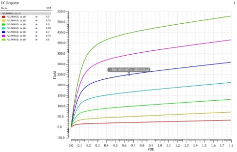
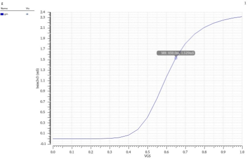
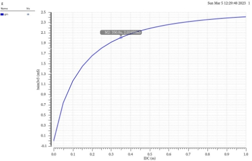
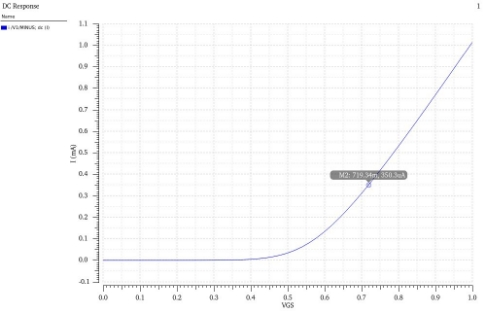
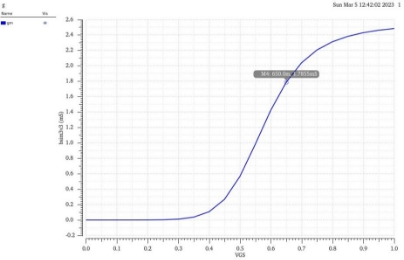
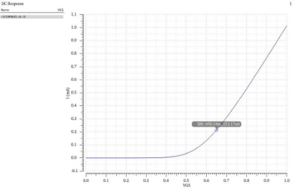

【模集】纳米级晶体管的设计
目录
之前推导的MOS管模型方程只适用于长沟道器件，不适用于纳米级的短沟道器件。**因此，纳米级的MOS管设计没有准确的公式模型，需要通过仿真工具来辅助设计。**在纳米级晶体管的设计中，我们重点关注以下几个参数，分别是：ID, VDS,min, gm, WL. 典型的晶体设计的问题是，给定前三个参数中的两个，求解余下的一些参数，如表1所示。
表1 纳米级晶体管设计遇到的三种情况
| 情况I | 情况II | 情况III | |
|---|---|---|---|
| 给定的参数 | ID, VDS,min | gm, ID | gm, VDS,min |
| 需求解的参数 | gm, WL |
VDS,min, WL | ID, WL |
修改设计 |
gm不足 增加ID和WL |
VDS,min太大 增加WL |
ID太大 增加WL, 降低VDS,min |
从表中可以看出，如果设计的指标不满足，还需要进一步进行调整。如何设计出系统性的方法，对纳米级MOS器件的另外另个参数进行求解，设计出符合要求的MOS器件成为了一个问题。

为了进一步探究如何设计纳米级器件，以NMOS器件为例，仿真电路图如图1所示。NMOS管的部分模型参数如表2所示，采用tsmc18工艺库。
表2 纳米级NMOS晶体管的模型参数
| 参数 | NMOS |
|---|---|
| W(um) | 5 |
| L(nm) | 180 |
| VTH(mV) | 0.5 |
| Multiplier | 1 |
| Fingers | 1 |
从表2中可以看出NMOS器件的沟段长度已经处于纳米级别，属于短沟道器件的范围，不能用长沟道的平方律模型进行分析，而需要仿真软件进行辅助。
给出具体情况，考虑ID=1mA, VDS,min=650mV, 希望确定器件的尺寸和跨导。具体步骤如下所示：
Step1: 选择一个参考晶体管，其宽度为WREF, 长度为允许的最小长度，为Lmin=180nm. 可以取WREF=5μm.
Step2: 用实际器件模型和电路仿真器，绘制出参考晶体管在不同VGS条件下的ID-VDS特性曲线, 如图2所示。
Step3: 对于ID*-*VDS特性曲线，在VDS=650mV处画一条竖线并且找到它与曲线的交点，在这里我们暂且选取VDS,min=VGS-VTH=650mV（VGS=700mV)的那条曲线进行分析，可以发现交点坐标处电流的取值为ID,REF=0.25mA.
Step4: 可以发现ID,REF并不满足给定的ID, **我们可以对晶体管的宽度进行缩放，从而改变漏电流的值。**实际的晶体管宽度W=IDID,REF×WREF=20μm.

接下来还需要确定纳米级NMOS器件的跨导，采用仿真的方法进行分析，在VDS=650mV的条件下画出跨导与VGS的曲线，如图3所示。

在平方律模型下图3所示曲线应当成线性关系，但是由于短沟道效应，gm最终会达到一个饱和值。可以发现在VGS-VTH=650mV（VGS=700mV)的时候，gm,REF=1.529mS. 如果将宽度和漏电流都扩大4倍，则gm也会扩大4倍，将会达到gm=7.645mS, 到这里就完成了纳米级NMOS晶体管的设计。
可以看到，在一开始选择ID*-*VDS特性曲线的时候，我们主要选择的是VDS,min=VGS-VTH=650mV（VGS=700mV)的那条曲线进行分析，如果选择VGS-VTH值更大的曲线进行分析，所得到的gm会偏小，这是因为gm=2IDVGS−VTH，而ID又是给定的，因此当VGS-VTH变大的时候，gm会变小，因此我们通常选择VDS,min=VGS-VTH， 尽管这会使晶体管更宽。
在这里，我们给定gm1=4mS, ID1=0.7mA. 首先我们需要考虑的一个问题是由于亚阈值的存在，gm会存在一个极值，我们需要检验gm是否合理。我们知道在亚阈值区域gmax=IDεVT=18mS>gm(ε=1.5), 因此可以得知gm合理，可以继续进行设计。具体步骤如下所示：
Step1: 选择一个参考晶体管WREF/Lmin=5μm/180nm, 画出参考晶体管的gm与ID的关系曲线，如图4所示。

Step2: 在gm与ID的平面上，找到给定的点(gm1,ID1)=(4mS,0.7mA), 从原点到该点画一条直线，得到交点(gm,REF,ID,REF)=(2mS,0.35mA), 如图4所示。
Step3: 做出ID与VGS的曲线，通过IREF得到所设计的VGS, 因此可以计算出VDS,min=VGS-VTH=219.34mV, 如图5所示。

Step4: 我们对WREF乘以比例因子gm1/gm,REF=2, 得到W=gm1gm,REF×WREF=10μm. 完成了纳米级晶体管的设计。

同时，这也带来一个问题，也就是经过原点与(gm1,ID1)的直线是否一定会与gm−ID曲线相交。如果我们考虑一个工作在强反型区域的平方律晶体管，那么在原点处的斜率应该是无穷大，这也保证了交点一定存在。然而，当ID1很小的时候，已经不符合平方律了，进入亚阈值区，此时gm1正比于ID1, 因此图5中灰色区域的组合是实现不了的，如图5所示。
在这种情况下，我们给定gm1=9mS,* VDS,min=150mV*.*
Step1: 对于参考晶体管，我们通过仿真画出gm与VGS的关系曲线，如图6所示。我们选取VDS,min=VGS-VTH=650mV（VGS=700mV)的那一点，可以得到跨导gm,REF=1.7855mS。


Step2: 同时，做出做出ID与VGS的曲线，通过VGS得到的ID,REF=213.17μA，如图7所示。
**Step3：**计算比例因子gm1/gm,REF≈5, 因此W=gm1gm,REF×WREF=25μm, 同时可以得到ID=gm1gm,REF×ID,REF=1.07mA，完成了相关设计。
本次实验充分探讨了在平方律模型不适用下的纳米级晶体管如何设计问题，需要借助仿真软件来辅助进行设计。探讨问题的过程具有创新性，通过参考晶体管最后尺寸扩倍的创新方法，完成了纳米级MOS晶体管的设计，为之后更为复杂的设计奠定了基础。
 Wechat
Wechat